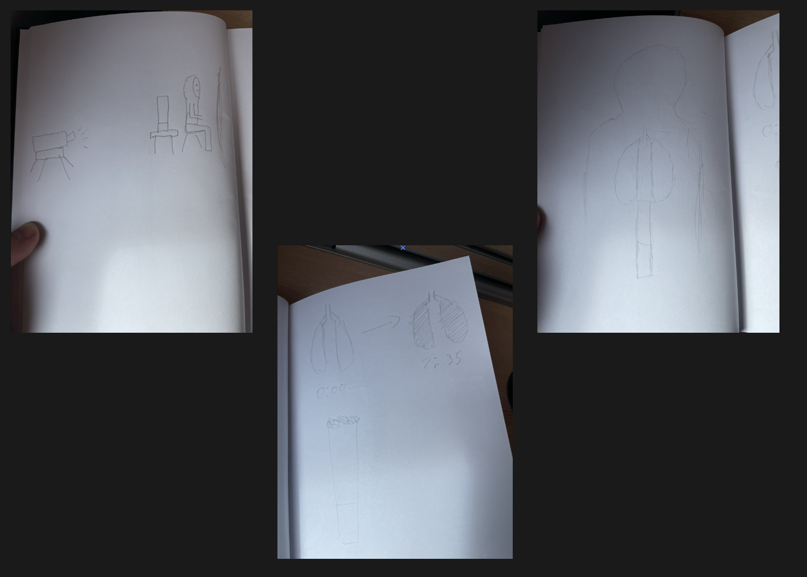

Role
Audio Visual Designer
Timeline
4 weeks
Tools
Adobe Illustrator, After Effects, Touch Designer
Type
Class Project
Abstraction
Audio Visual Designer
4 weeks
Adobe Illustrator, After Effects, Touch Designer
Class Project
Final version
Product van je Omgeving is an audio-visual installation that explores how difficult it is to break habits, especially when they are reinforced by your environment. The work focuses less on smoking itself and more on the feeling of being stuck in a cycle you keep returning to. Through abstract visuals, sound, and projection on the body, the installation slowly builds tension and shows how a habit can start to feel overwhelming and inescapable. It reflects on how repetition and surroundings can make change harder than it seems at first.
The challenge was to talk about this subject without turning it into a simple “smoking is bad” message. I wanted to focus more on how hard it is to break habits, especially when your environment keeps reinforcing them, and make people more aware of that.
I really wanted to experiment with body projection, so I had to figure out how to make that work in a clean and controlled way. Getting the visuals right took time, especially making graphics that actually fit the body and still looked good when projected.
I approached it by focusing on feeling first, not a clear message. Instead of directly showing “smoking is bad,” I used repetition, looping visuals, and sound to mimic how habits keep pulling you back in. The body projection made it more personal, so it feels like something you’re stuck in rather than just watching from the outside.
First version
Most of the feedback was about making certain parts a bit clearer and refining small details in the audio to improve the overall experience.
I added extra smoke effects and a background with slowly building smoke to push the idea of “drowning in it.” I also removed some of the lighter flicks during the breakdown to keep it more consistent. The color change in the lung should also be more apparent.
I started this project by sketching out my ideas. At first, I planned to use a cigarette that would slowly get “smoked” as the main visual element.

First Sketches
I decided to drop that idea because it made the piece less abstract. I also expected it would be hard to map both the lungs and the cigarette clearly in the same frame.
Making the lungs itself didn’t take that long. I created them in Illustrator using two colors at the start, blue and red to suggest veins, and a darker brown/black version for the end state. The only issue was that they felt too static, so I wanted to add some movement.
I imported them into After Effects and added subtle animation using slight scaling and path distortion, so the healthy lungs feel like they’re breathing. For the unhealthy ones, instead of re-animating everything, I used color grading and effects to gradually darken and degrade them over time, which made the change feel more natural and less forced.
For the audio, I worked with friends to record different voice lines and experimented with what felt natural. A lot of it was trial and error, since some takes sounded too forced or too obvious. I had to redo quite a few lines until they felt more subtle and believable, so the message came through without being too direct.
For the background music, I made a track inspired by Dead by Daylight, which is based on the Dies Irae, a really old chant tied to themes of death and judgment. I chose that because it has a heavy, somber tone that fits the idea of being stuck in a habit you can’t escape. it just sits in the background and adds this constant, almost hopeless feeling without being too obvious.